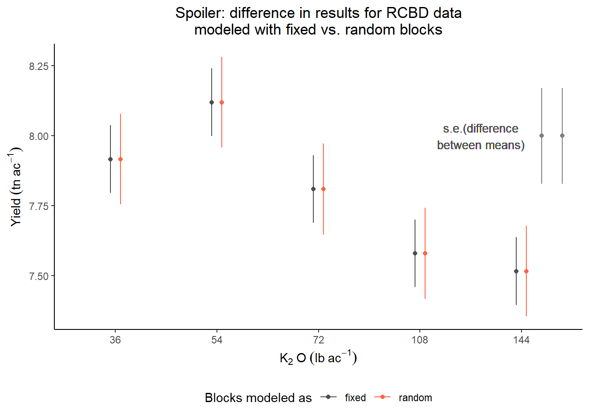

Day 3 Mixed models II
January 30th, 2026
3.1 Generalities of linear mixed models
Mixed-effects models combine fixed effects and random effects. Typically, we can define a Gaussian mixed-effects model as
\[\mathbf{y} = \mathbf{X} \boldsymbol{\beta} + \mathbf{Z}\mathbf{u} + \boldsymbol{\varepsilon}, \\ \begin{bmatrix}\mathbf{u} \\ \boldsymbol{\varepsilon} \end{bmatrix} \sim \left( \begin{bmatrix}\boldsymbol{0} \\ \boldsymbol{0} \end{bmatrix}, \begin{bmatrix}\mathbf{G} & \boldsymbol{0} \\ \boldsymbol{0} & \mathbf{R} \end{bmatrix} \right),\]
where \(\mathbf{y}\) is the observed response,
\(\mathbf{X}\) is the matrix with the explanatory variables,
\(\mathbf{Z}\) is the design matrix,
\(\boldsymbol{\beta}\) is the vector containing the fixed-effects parameters,
\(\mathbf{u}\) is the vector containing the random effects parameters,
\(\boldsymbol{\varepsilon}\) is the vector containing the residuals,
\(\mathbf{G}\) is the variance-covariance matrix of the random effects,
and \(\mathbf{R}\) is the variance-covariance matrix of the residuals.
Typically, \(\mathbf{G} = \sigma^2_u \mathbf{I}\) and \(\mathbf{R} = \sigma^2 \mathbf{I}\).
If we do the math, we get that
\[E(\mathbf{y}) = \mathbf{X}\boldsymbol{\beta},\] \[Var(\mathbf{y}) = \mathbf{Z}\mathbf{G}\mathbf{Z}' + \mathbf{R}.\]
Fixed effects versus random effects
| Fixed effects | Random effects | |
|---|---|---|
| Where | Expected value | Variance-covariance matrix |
| Inference | Constant for all groups in the population of study | Differ from group to group |
| Usually used to model | Carefully selected treatments or genotypes | The study design (aka structure in the data, or what is similar to what) |
| Assumptions | \[\hat{\boldsymbol{\beta}} \sim N \left( \boldsymbol{\beta}, (\mathbf{X}^T \mathbf{V}^{-1} \mathbf{X})^{-1} \right) \] | \[u_j \sim N(0, \sigma^2_u)\] |
| Method of estimation | Maximum likelihood, least squares | Restricted maximum likelihood (shrinkage) |
3.2 Inference from linear mixed models
3.2.1 Balanced designs – blocks as fixed or as random?
| Fixed effects | Random effects | |
|---|---|---|
| Standard error of the mean | \(\sqrt{\frac{\sigma^2_\varepsilon}{b}}\) | \(\sqrt{\frac{\sigma^2_\varepsilon + \sigma^2_b}{b}}\) |
| Stanard error of the difference of means | \(\sqrt{\frac{2\sigma^2_\varepsilon}{b}}\) | \(\sqrt{\frac{2\sigma^2_\varepsilon}{b}}\) |
See Dixon (2016).
library(lme4)
library(tidyverse)
library(emmeans)
library(latex2exp)
df <- read.csv("../data/cochrancox_kfert.csv")
df$rep <- as.factor(df$rep)
df$K2O_lbac <- as.factor(df$K2O_lbac)
m_fixed <- lm(yield ~ K2O_lbac + rep, data = df)
m_random <- lmer(yield ~ K2O_lbac + (1|rep), data = df)
(mg_means_fixed <- emmeans(m_fixed, ~K2O_lbac, contr = list(c(1, 0, 0, 0, -1))))## $emmeans
## K2O_lbac emmean SE df lower.CL upper.CL
## 36 7.92 0.121 8 7.64 8.19
## 54 8.12 0.121 8 7.84 8.40
## 72 7.81 0.121 8 7.53 8.09
## 108 7.58 0.121 8 7.30 7.86
## 144 7.52 0.121 8 7.24 7.79
##
## Results are averaged over the levels of: rep
## Confidence level used: 0.95
##
## $contrasts
## contrast estimate SE df t.ratio p.value
## c(1, 0, 0, 0, -1) 0.4 0.171 8 2.344 0.0471
##
## Results are averaged over the levels of: rep## $emmeans
## K2O_lbac emmean SE df lower.CL upper.CL
## 36 7.92 0.162 5.57 7.51 8.32
## 54 8.12 0.162 5.57 7.72 8.52
## 72 7.81 0.162 5.57 7.41 8.21
## 108 7.58 0.162 5.57 7.18 7.98
## 144 7.52 0.162 5.57 7.11 7.92
##
## Degrees-of-freedom method: kenward-roger
## Confidence level used: 0.95
##
## $contrasts
## contrast estimate SE df t.ratio p.value
## c(1, 0, 0, 0, -1) 0.4 0.171 8 2.344 0.0471
##
## Degrees-of-freedom method: kenward-rogeras.data.frame(mg_means_fixed$emmeans) %>%
mutate(blocks = "fixed") %>%
bind_rows(as.data.frame(mg_means_random$emmeans) %>%
mutate(blocks = "random")) %>%
ggplot(aes(K2O_lbac, emmean))+
geom_errorbar(aes(ymin = emmean-SE, ymax = emmean+SE,
color = blocks),
position = position_dodge(width = .2),
width = 0)+
geom_text(aes(x = 4.6, y = 8), label = "s.e.(difference\nbetween means)",
color = "grey30", size = 3.5)+
geom_point(aes(x = 5.2, y = 8), color = "grey50")+
geom_point(aes(x = 5.4, y = 8), color = "grey50")+
geom_errorbar(aes(x = 5.4, y = 8, ymin = 8 - SE, ymax = 8 + SE),
width = 0, color = "grey50",
data = as.data.frame(mg_means_random$contrasts))+
geom_errorbar(aes(x = 5.2, y = 8, ymin = 8 - SE, ymax = 8 + SE),
width = 0, color = "grey50",
data = as.data.frame(mg_means_fixed$contrasts))+
scale_color_manual(values = c("grey30", "tomato"))+
geom_point(aes(color = blocks), position = position_dodge(width = .2))+
theme_classic()+
labs(title = "Spoiler: difference in results for RCBD data\nmodeled with fixed vs. random blocks",
color = "Blocks modeled as",
y = expression(Yield~(tn~ac^{-1})),
x = expression(K[2]~O~(lb~ac^{-1})))+
theme(legend.position = "bottom",
plot.title = element_text(hjust = .5))
3.2.2 Unbalanced designs
Unbalanced designs sometimes occur due to logistical (practical) convenience.
In unbalanced designs, the simple comparison of group averages, \(\bar{y}_1 - \bar{y}_0\), is not, in general, a good estimate of the average treatment effect.
See Chapter 10 in Gelman and Hill.
Multilevel (mixed) models are useful to recover inter-group information.
Intra-block information: differences between treatments inside the same block.
Inter-block information: differences between the totals of blocks containing different treatments.
If you’re new to this:
- Mixed models are better at recovering inter-block information (i.e., comparing across blocks, even though maybe blocks don’t share the same treatments) than all-fixed effects models.
- Recovering inter-block information means that they have more information about, for e.g., mean comparisons.
- Then, mean comparisons are more precise (i.e., more narrow CI).
If you’re not new to this:
- Yates (1940):
- Fixed-only models only recover intra-block information.
- To recover inter-block information, we can weigh the means depending on what block they fell in
- “(…)estimates of the varietal differences will be given by the differences of the weighted means.”
- Patterson and Thompson (1971) discuss the recovery of inter-block information when block sizes are unequal.
- Henderson’s mixed models are already around to estimate the weights for the means.
- Where are those weights you ask?
- \(\mathbf{V}\) in the estimator \(\hat{\boldsymbol{\beta}}_{REML} = (\mathbf{X}^T \mathbf{V}^{-1} \mathbf{X})^{-1}\mathbf{X}^T \mathbf{V}^{-1} \mathbf{y}.\)
- Weights are inversely proportional to \(\sigma^2_b\).
Let’s look at an example
The data below were generated by a balanced incomplete block design, where genotypes are the treatment factor (one-way trt structure with 13 levels) and the locations are the blocking factor.
As discussed, there are two obvious candidate models:
All-fixed model
\[y_{ij} = \mu + G_i + L_j + \varepsilon_{ij}, \\ \varepsilon_{ij} \sim N(0, \sigma^2).\]
Mixed model
\[y_{ij} = \mu + G_i + L_j + \varepsilon_{ij}, \\ L_{j} \sim N(0, \sigma_L^2), \\ \varepsilon_{ij} \sim N(0, \sigma^2).\]
Let’s fit those models to the data and see what we get:
library(lme4)
library(emmeans)
# data generated by an BIBD
dat_bibd <- agridat::cochran.bib
# all-fixed option
m_fixed_intra <- lm(yield ~ gen + loc , data = dat_bibd)
# mixed option
m_mixed_inter <- lmer(yield ~ gen + (1|loc) , data = dat_bibd)Let’s look at a summary of both. Note that the genotype effects don’t match like they would for an RCBD.
##
## Call:
## lm(formula = yield ~ gen + loc, data = dat_bibd)
##
## Residuals:
## Min 1Q Median 3Q Max
## -7.2173 -2.0077 0.0404 1.7942 7.6673
##
## Coefficients:
## Estimate Std. Error t value Pr(>|t|)
## (Intercept) 29.9865 3.5567 8.431 4.83e-09 ***
## genG02 -4.7308 3.5024 -1.351 0.1880
## genG03 -2.7846 3.5024 -0.795 0.4335
## genG04 -4.9000 3.5024 -1.399 0.1732
## genG05 -3.0462 3.5024 -0.870 0.3921
## genG06 -5.9000 3.5024 -1.685 0.1036
## genG07 -3.2769 3.5024 -0.936 0.3578
## genG08 0.7154 3.5024 0.204 0.8397
## genG09 -3.9846 3.5024 -1.138 0.2653
## genG10 -4.9769 3.5024 -1.421 0.1668
## genG11 -8.4769 3.5024 -2.420 0.0225 *
## genG12 -2.9154 3.5024 -0.832 0.4125
## genG13 2.3769 3.5024 0.679 0.5031
## locB02 -2.8154 3.5024 -0.804 0.4285
## locB03 -3.0385 3.5024 -0.868 0.3933
## locB04 0.7231 3.5024 0.206 0.8380
## locB05 2.1692 3.5024 0.619 0.5409
## locB06 5.4692 3.5024 1.562 0.1300
## locB07 3.0000 3.5024 0.857 0.3992
## locB08 5.9462 3.5024 1.698 0.1011
## locB09 8.0615 3.5024 2.302 0.0293 *
## locB10 3.2231 3.5024 0.920 0.3656
## locB11 5.9769 3.5024 1.707 0.0994 .
## locB12 4.3154 3.5024 1.232 0.2285
## locB13 6.1692 3.5024 1.761 0.0895 .
## ---
## Signif. codes: 0 '***' 0.001 '**' 0.01 '*' 0.05 '.' 0.1 ' ' 1
##
## Residual standard error: 4.465 on 27 degrees of freedom
## Multiple R-squared: 0.6541, Adjusted R-squared: 0.3467
## F-statistic: 2.128 on 24 and 27 DF, p-value: 0.02976## Linear mixed model fit by REML ['lmerMod']
## Formula: yield ~ gen + (1 | loc)
## Data: dat_bibd
##
## REML criterion at convergence: 253.6
##
## Scaled residuals:
## Min 1Q Median 3Q Max
## -1.9920 -0.5298 0.1450 0.5707 1.5626
##
## Random effects:
## Groups Name Variance Std.Dev.
## loc (Intercept) 6.053 2.460
## Residual 19.934 4.465
## Number of obs: 52, groups: loc, 13
##
## Fixed effects:
## Estimate Std. Error t value
## (Intercept) 34.171 2.445 13.978
## genG02 -5.131 3.333 -1.539
## genG03 -4.063 3.333 -1.219
## genG04 -6.095 3.333 -1.829
## genG05 -3.828 3.333 -1.149
## genG06 -6.579 3.333 -1.974
## genG07 -3.414 3.333 -1.024
## genG08 -1.419 3.333 -0.426
## genG09 -5.616 3.333 -1.685
## genG10 -6.071 3.333 -1.821
## genG11 -10.703 3.333 -3.211
## genG12 -5.185 3.333 -1.556
## genG13 1.004 3.333 0.301Look at the variance.
## [1] 4.464749## [1] 4.464749Look at some treatment means.
- Why are all s.e. the same?
- Why are s.e.(fixed) < s.e.(random)?
## gen emmean SE df lower.CL upper.CL
## G01 33.00192 2.458672 27 27.95715 38.04670
## G02 28.27115 2.458672 27 23.22638 33.31593
## G03 30.21731 2.458672 27 25.17253 35.26209
## G04 28.10192 2.458672 27 23.05714 33.14670
## G05 29.95577 2.458672 27 24.91099 35.00055
## G06 27.10192 2.458672 27 22.05714 32.14670
##
## Results are averaged over the levels of: loc
## Confidence level used: 0.95## gen emmean SE df lower.CL upper.CL
## G01 34.17116 2.496721 38.32 29.11820 39.22412
## G02 29.04064 2.496721 38.32 23.98769 34.09360
## G03 30.10793 2.496721 38.32 25.05497 35.16089
## G04 28.07579 2.496721 38.32 23.02283 33.12875
## G05 30.34293 2.496721 38.32 25.28998 35.39589
## G06 27.59169 2.496721 38.32 22.53873 32.64464
##
## Degrees-of-freedom method: kenward-roger
## Confidence level used: 0.95Look at some treatment differences.
- Why are s.e.(fixed) > s.e.(random)?
## contrast estimate SE df t.ratio p.value
## c(1, -1, 0, 0, 0, 0, 0, 0, 0, 0, 0, 0, 0) 4.73 3.5 27 1.351 0.1880
##
## Results are averaged over the levels of: loc## contrast estimate SE df t.ratio p.value
## c(1, -1, 0, 0, 0, 0, 0, 0, 0, 0, 0, 0, 0) 5.13 3.42 32.6 1.502 0.1427
##
## Degrees-of-freedom method: kenward-roger